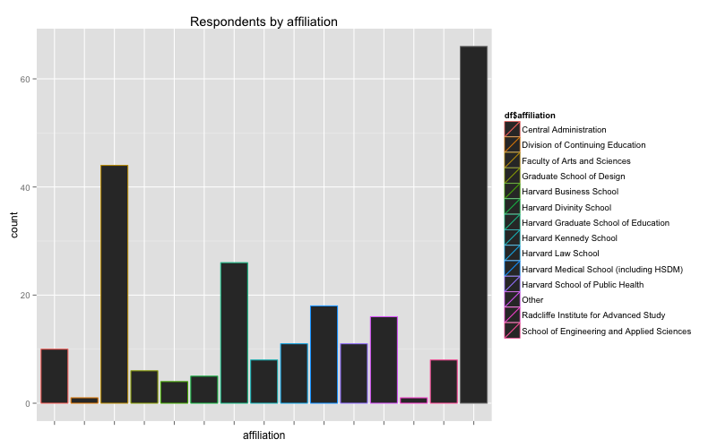
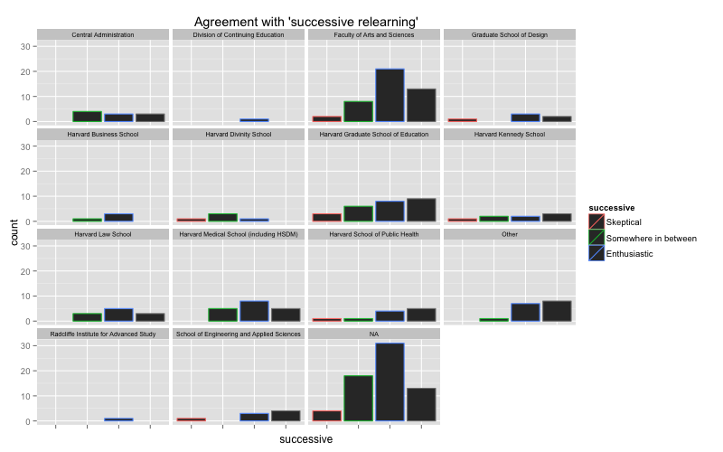
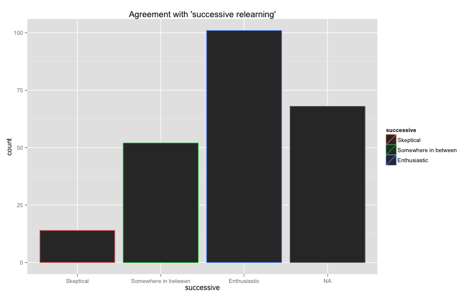
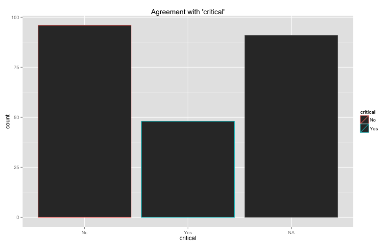
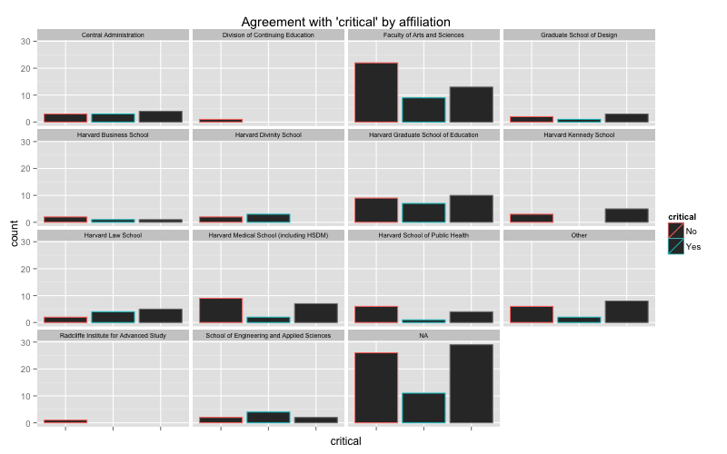

HILT Report Analysis Notes
Table of Contents
1 Data summary
df <- read.csv("HILT Report.csv", header=TRUE, stringsAsFactors=FALSE, na.strings="")
names(df) <- c("affiliation", "questions", "successive", "critical")
df$successive <- factor(df$successive,
c("Skeptical", "Somewhere in between", "Enthusiastic"))
df$affiliation <- factor(df$affiliation)
df$critical <- factor(df$critical)
library("ggplot2")
library("Hmisc")
library("ascii")
options(asciiType="org")
options(warn=-1) ascii(summary(df))
| affiliation | questions | successive | critical | |
|---|---|---|---|---|
| 1 | Faculty of Arts and Sciences :44 | Length:235 | Skeptical : 14 | No :96 |
| 2 | Harvard Graduate School of Education :26 | Class :character | Somewhere in between: 52 | Yes :48 |
| 3 | Harvard Medical School (including HSDM):18 | Mode :character | Enthusiastic :101 | NA’s:91 |
| 4 | Other :16 | NA’s : 68 | ||
| 5 | Harvard Law School :11 | |||
| 6 | (Other) :54 | |||
| 7 | NA’s :66 |
describe(df[,-2])
df[, -2]
3 Variables 235 Observations
--------------------------------------------------------------------------------
affiliation
n missing unique
169 66 14
Central Administration (10, 6%), Division of Continuing Education (1, 1%)
Faculty of Arts and Sciences (44, 26%), Graduate School of Design (6, 4%)
Harvard Business School (4, 2%), Harvard Divinity School (5, 3%)
Harvard Graduate School of Education (26, 15%), Harvard Kennedy School (8, 5%)
Harvard Law School (11, 7%), Harvard Medical School (including HSDM) (18, 11%)
Harvard School of Public Health (11, 7%), Other (16, 9%)
Radcliffe Institute for Advanced Study (1, 1%)
School of Engineering and Applied Sciences (8, 5%)
--------------------------------------------------------------------------------
successive
n missing unique
167 68 3
Skeptical (14, 8%), Somewhere in between (52, 31%), Enthusiastic (101, 60%)
--------------------------------------------------------------------------------
critical
n missing unique
144 91 2
No (96, 67%), Yes (48, 33%)
--------------------------------------------------------------------------------
2 Basic plots
qplot(affiliation, data=df,
color=df$affiliation) +
ggtitle("Respondents by affiliation") +
theme(axis.text.x = element_blank())

qplot(successive, data=df,
color=successive,
facets= ~ affiliation) +
theme(axis.text.x = element_blank(),
strip.text.x = element_text(size="7")) +
labs(title = "Agreement with 'successive relearning'")

qplot(successive, color=successive, data=df) +
labs(title = "Agreement with 'successive relearning'")

qplot(critical, color=critical, data=df) +
labs(title = "Agreement with 'critical'")

qplot(critical, color=critical,
data=df,
facets= ~ affiliation) +
labs(title = "Agreement with 'critical' by affiliation") +
theme(axis.text.x = element_blank(),
strip.text.x = element_text(size="7"))

ascii(df[!is.na(df$questions),1:2])
| affiliation | questions | |
|---|---|---|
| 3 | How do you support continuous professional learning for teachers? | |
| 13 | Other | How do you balance the need for students to master material and the need for students to question what they are being told? |
| 14 | Harvard Graduate School of Education | Pipeline for translating ed research into practice? Models that stress accessibility rather than profit. |
| 19 | Harvard Medical School (including HSDM) | Following on one of the other questions below (about notecards/flashcards), I’m curious to know if Katherine Rawson has any data on successive relearning for concepts (as from more advanced classes) vs. content/intro concepts. Is successive learning effective beyond intro-level courses? |
| 24 | Harvard Medical School (including HSDM) | How do you manage students’ feelings of entitlement to their preferred learning styles when they may be at odds with your approach to teaching? |
| 33 | Faculty of Arts and Sciences | How do we differentiate learning from memorization? Isn’t successive relearning just memorization?, What have been your most memorable experiences as a teacher and why?, I’d like to know more about the FIELD method |
| 37 | Harvard Graduate School of Education | How do we consider or factor the way assessments are designed and courses are structured in how well learners learn and retain concepts. Isn’t successive relearning trying to address problems that we have created because of how we choose to teach? |
| 43 | Other | isn’t part of the drive to assess part of the structural transformation of the faculty from learned professionals to technically specialized employees? |
| 47 | Faculty of Arts and Sciences | Should we hold stude, Should we hold students accountable for long term retention? |
| 55 | Harvard Graduate School of Education | Considering the various definitions of “learning”, which are effectively assessed through recall?, How do we gather and share rich data about learning that is not easily quantifiable?, When we define learning as delayed recall, how does this limit our investigation of quality teaching? |
| 70 | Other | How to teach innovation?, How to evaluate a learning or teaching is successful? |
| 81 | Harvard Business School | How can faculty & staff collaborate to create an environment that promotes a “virtuous circle” where learning and the application of knowledge & skills are reinforced both inside & outside the classroom? |
| 88 | Harvard Medical School (including HSDM) | What are the most successful models for cross-campus delivery of discussion-based curriculum to bridge our different schools and different groups of students? |
| 93 | Faculty of Arts and Sciences | Faculty: we (instructional support staff) struggle to make ourselves available to you, yet so often you voice concern that you do not have enough support. How can we do a better job of reaching out to you when you need us? |
| 115 | Faculty of Arts and Sciences | Katherine Rawson and Eric Mazur have made directly opposing statements about notecards in the past two days. I’d love to hear a discussion - diversity about points of view is interesting! |
| 149 | Is there any data showing positive or negative impacts of courses that make extensive use of activity based learning | |
| 153 | Harvard Divinity School | C |
| 191 | What should we be teaching: content and curriculum choices? (e.g. Is Shakespeare relevant in the 21st century) | |
| 231 | With the advent of MOOCs (massive open on-line course) such as those offered by EdX, what would be the best way to leverage these large communities of students to inform and drive teaching methods? | |
| 232 | what is the appropriate unit of time across which to measure change in student or teacher efficiency? Semester? 4 years? Lifetime? | |
| 233 | Some great online courses in the sciences have interactive exercises and simulations. What are potential advantages of online courses in the social sciences and humanities? -Hauke | |
| 234 | Much of the research on learning seems focused on helping students to master certain types of information and concepts. However, most of the people in this room indicated that the most important things about learning have to do with engagement, passion, and, Most of the researc, Most | |
| 235 | Is “students retain 90% of what they do, 50% of what they hear and 10% of what they see” a myth? |